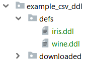

fprules¶
make-like file pattern rules for build tools such as doit.


In GNU make there is a powerful concept that many users love for its compacity and expressiveness: so-called "pattern rules". The concept is extremely simple:
- you define a recipe for each file matching a certain pattern,
- that recipe typically leads to creating one or more files. The names of these files are created based on the name of the original file
For example:
%.tab.c %.tab.h: %.y bison -d $<
tells make that the recipe bison -d foo.y will make both foo.tab.c and foo.tab.h.
The goal of fprules is to provide similar functionality in python, but to decouple it from the build tool itself - so that you can use it in any python task-oriented build tool of your choice, such as doit.
Installing¶
> pip install fprules
Usage¶
1 source file -> 1 target file¶
In this fictitious example we have a bunch of *.ddl files in a defs/ folder.

Each of them contains a URL to a remote csv file. For example you can look at iris.ddl.
We wish to create a download task for each of them, so that the task is named after the .ddl file name and the destination of the download is a new .csv file under folder downloaded/.
Thanks to fprules we can easily generate a to-do list:
from fprules import file_pattern # define the pattern to create a generator ddl_task_generator = file_pattern('./defs/*.ddl', './downloaded/%.csv') # print the contents of the to-do list for t in ddl_task_generator: print(t)
yields:
[iris.ddl] defs/iris.ddl -> downloaded/iris.csv [wine.ddl] defs/wine.ddl -> downloaded/wine.csv
We can then create the tasks with our preferred build tool. For example with doit we can create the following dodo.py file. Note: this code requires wget.
from wget import download from fprules import file_pattern def download_from_ddl_def(ddl_file, csv_path): """ download csv file to `csv_path` from url in `ddl_file` """ # Read the URL from the file with open(ddl_file) as f: ddl_url = f.readline().strip('\n\r') # Download print("== Downloading file from %s to %s" % (ddl_url, csv_path)) download(str(ddl_url), str(csv_path)) def task_download_data(): """ Downloads file `./downloaded/<dataset>.csv` for each def file `./defs/<dataset>.ddl`. """ for data in file_pattern('./defs/*.ddl', './downloaded/%.csv'): yield { 'name': data.name, 'file_dep': [data.src_path], 'actions': [(download_from_ddl_def, (), dict(ddl_file=data.src_path, csv_path=data.dst_path))], 'verbosity': 2, 'targets': [data.dst_path] }
doit lists the tasks correctly:
>>> doit list --all download_data Downloads file `./downloaded/<dataset>.csv` for each def file `./defs/<dataset>.ddl`. download_data:iris download_data:wine
And execution of the task group works as expected:
>>> doit download_data . download_data:iris == Downloading file from https://archive.ics.uci.edu/ml/machine-learning-databases/iris/iris.data to downloaded\iris.csv 5.00KB [00:00, 4.86kKB/s] . download_data:wine == Downloading file from https://archive.ics.uci.edu/ml/machine-learning-databases/wine/wine.data to downloaded\wine.csv 11.0KB [00:00, 5.43kKB/s]
Patterns syntax¶
Basics¶
TODO
Variable paths¶
TODO
1 source file -> n target files¶
TODO
Main features / benefits¶
TODO
See Also¶
Concerning the strategies:
- The doit task-oriented automation tool
Related stack overflow discussions:
- TODO
Others¶
Do you like this library ? You might also like my other python libraries
Want to contribute ?¶
Details on the github page: https://github.com/smarie/python-fprules